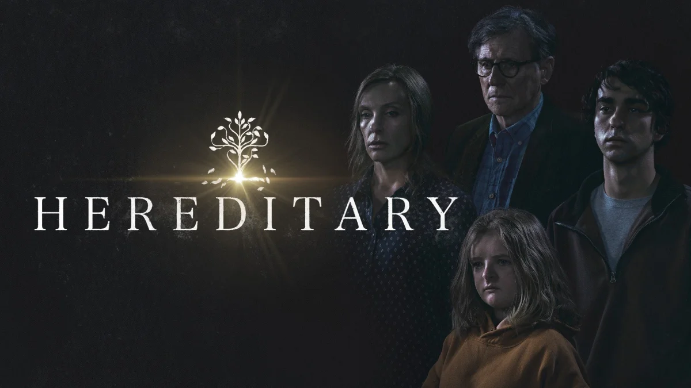
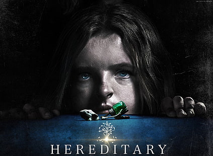
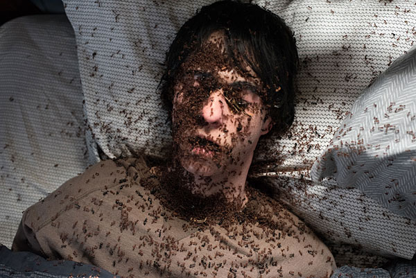
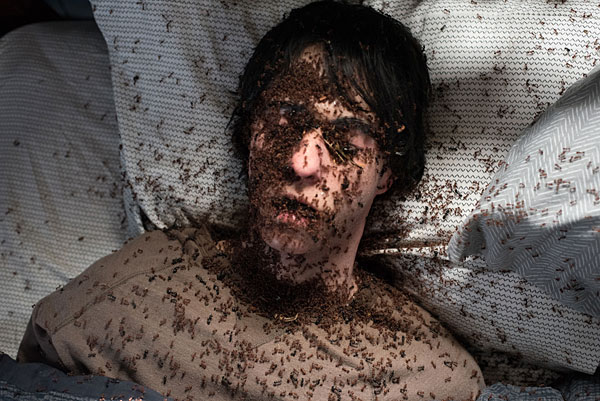

Terror
Drama
Tensa
Pesimista
Sinopsis
Hereditary es un inquietante thriller psicológico dirigido por Ari Aster que explora la complejidad del duelo, la familia y el legado oscuro que se hereda de generación en generación. La historia comienza con la muerte de Ellen, la matriarca de la familia Graham. Annie, su hija, es una artista que se especializa en la creación de maquetas que reflejan su vida familiar. A medida que Annie y su familia intentan lidiar con la pérdida, comienzan a desenterrar secretos inquietantes sobre su linaje.
Elenco Destacado
- Toni Collette como Annie Graham
- Alex Wolff como Peter Graham
- Millie Shapiro como Charlie Graham
- Gabriel Byrne como Steve Graham
Galería
 
